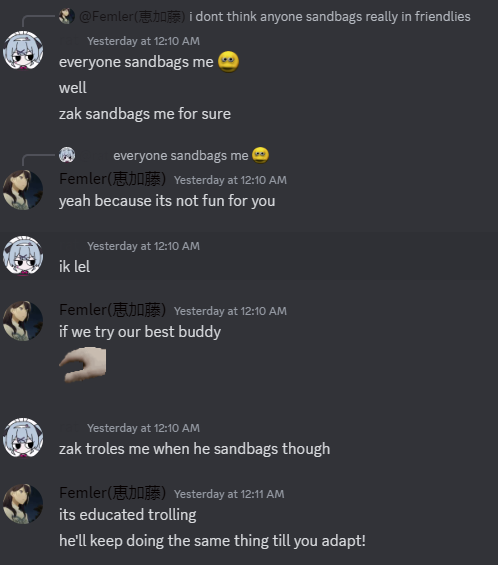

Had a conversation with a couple friends of mine regarding a fighting game. One of my friends is pretty new to fighting games, doesn't really play them much, and so, naturally, I go easy on him.
This is true. I feel like if I just twerked all over you your situational awareness would not be enough to really identify what even happened to you, and so it wouldn't be possible to develop a plan to beat it. But if I just throw fireballs over and over then it's easy to understand what is killing you, and you can just focus on the plan: "how do i beat this thing that i can clearly understand is killing me".
I think most people have an intuitive understanding of why this approach makes sense, but intuitive understandings aren't enough for me, so I like to flesh out my in-depth fundamental understanding on why this is a good approach.
In Decomposing Agency, Owen Cotton-Barratt and Raymond Douglas outline four features we generally expect agents to have:
- Goals
- Things they are trying to achieve
- e.g. I would like a cup of tea OR I would like to kill Zak
- Implementation capacity
- The ability to act in the world
- e.g. I have hands and legs OR I have hands and fingers and a controller and a halfway decent internet connection and the dexterity required to pull off my plans
- Situational awareness
- Understanding of the world (relevant to the goals)
- e.g. I know where I am, where the kettle is, and what it takes to make tea OR I know where the characters are, where the fireball comes from, and how fast it comes at me
- Planning capacity
- The ability to choose actions to effectively further their goals, given their available action set and their understanding of the situation
- e.g. I’ll go downstairs and put the kettle on OR I’ll jump over the fireball
I think the more things are in your way, the more overwhelming it actually is to get better. When you're playing a new game, as a new player, against another new player, it is generally less overwhelming to learn, because the goal is clear, the new player isn't demanding too much situational awareness from you, the plans you are required to develop in order to beat the new player aren't too complicated, and while your implementation capacity might suck, the simple plans that you need to beat the new player won't demand too much from you on that front either.
The more barriers there are in the way of Goals (e.g. playing characters with convoluted gameplans), Implementation capacity (forcing yourself to use optimal combos right off the bat), Situational awareness (playing against techniques that require an explanation to understand like fuzzy mixups or delay teching), or Planning capacity (playing against a player who is simply better than you, without a handicap), the more overwhelming things get.
This is why quiet games with only a handful of players who have been playing that game since 2003 are so hard to simply jump into. And it's why when a martial arts master spars against a white belt, they don't just knock them on their ass and beat their face into a pulp.
But hey, that's just my perspective.
If they ask me to just twerk all over them that's fine too ¯\_(ツ)_/¯